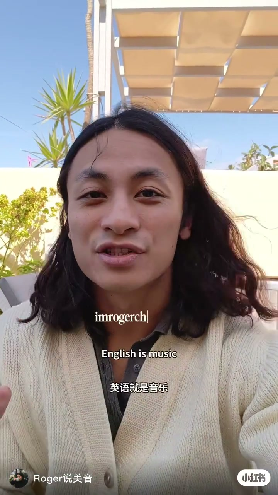
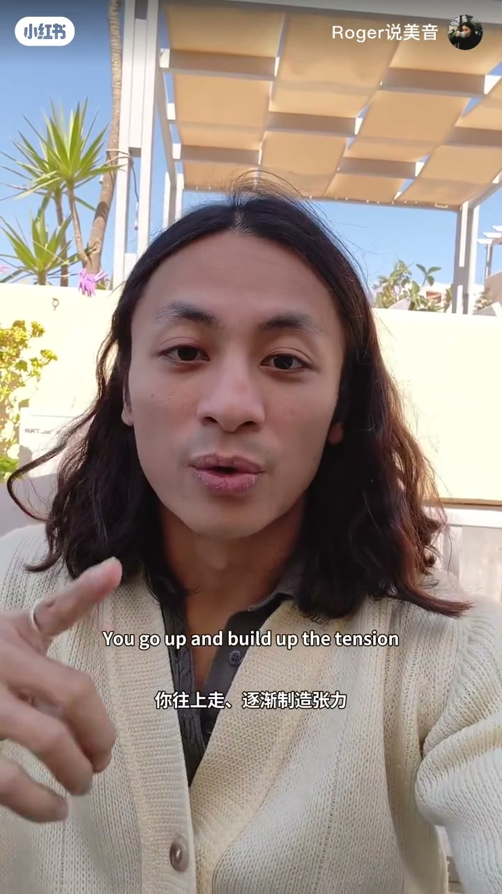
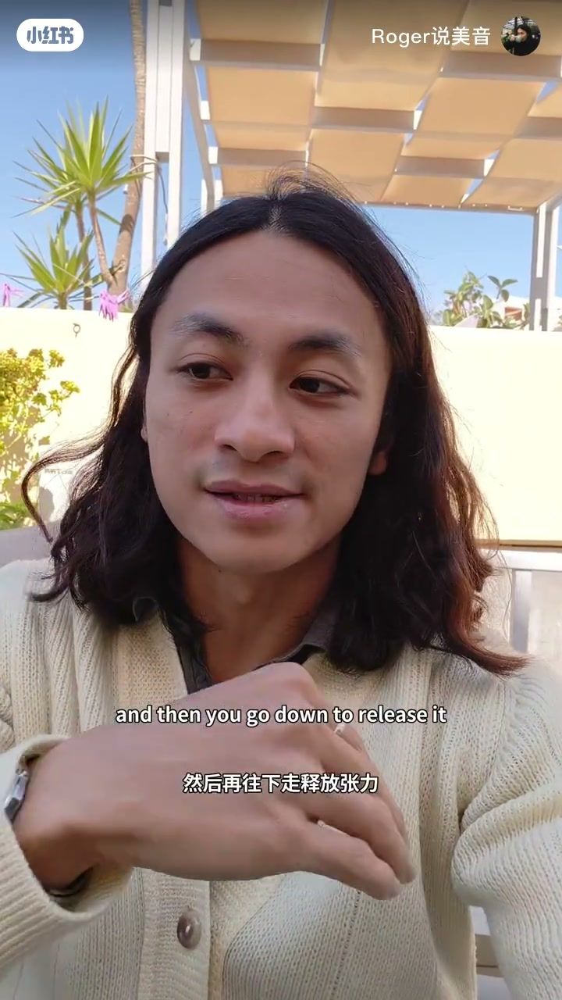
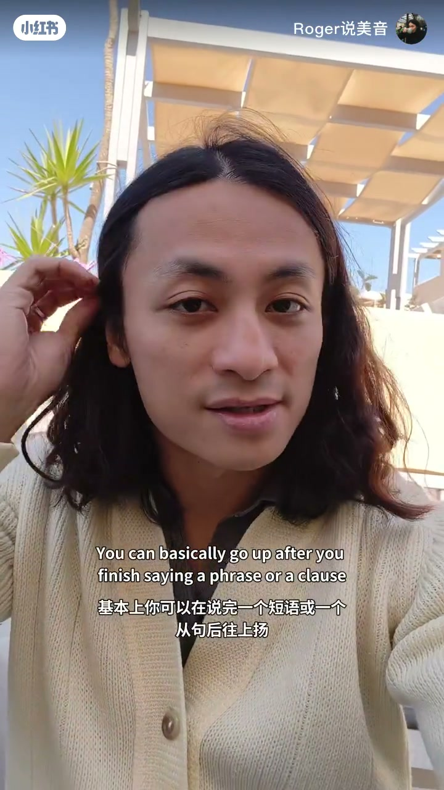
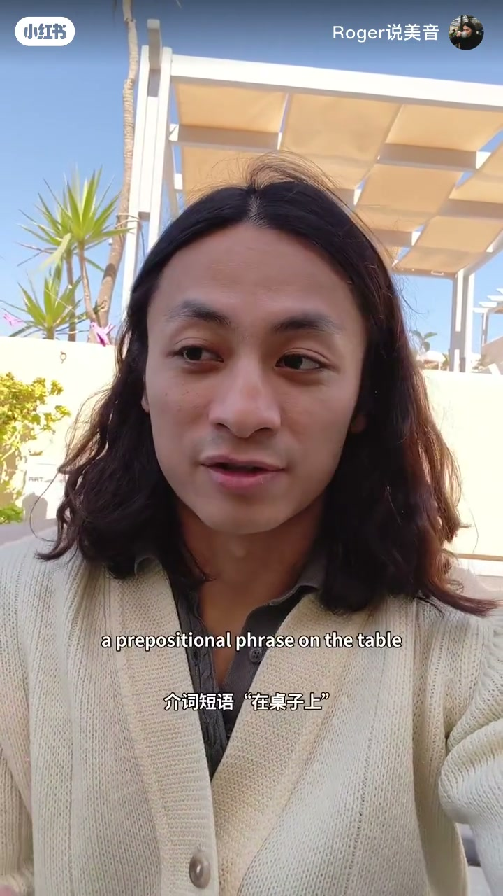
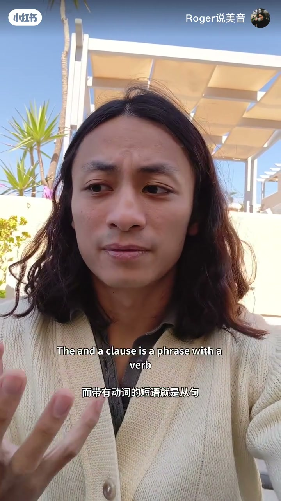

内容要点
小红书 UP 主 Roger说美音（画面账号 imrogerchow）用约一分钟口播，把口语语调压成一条可跟练的节奏型：英语像音乐，先往上造张力、再往下释放；短语或从句结束后上扬，信息结束时下落。片中用介词短语与 if 从句链当场示范。下列实录按时间线展开；Whisper 为繁体且有误识，正文以画面英中字幕与笔记文案校正。
知识结构
English is music：每句话都有上扬与下落，先建立「说话像唱歌」的听感。
往上制造张力 → 往下释放；关键是知道该在哪里上扬——短语/从句说完后。
on the table / under the light 等介词短语示范边界上扬，再落到 there is a book。
clause=带动词的短语；if… / if… 上扬，we can eat together 收束下落；更有音乐性也更易懂。
点赞关注留言；想学英语可私聊（平台 CTA）。
先记住「上-上-下」：未说完的信息块上扬吊住听者，说完再下落释放；跟练时优先练短语边界与 if 从句链，而不是逐词平推。
00:00–00:09开场：英语就是音乐
视频在户外露台开拍。作者先用「Dada dada dada / 哒哒哒哒哒哒」做节奏口型，随即打出全片命题大字：English is music / 英语就是音乐。口播强调：每一句话都有上扬与下落，语调本身就像旋律线。Whisper 把「大致规则」误识成「法律」，画面字幕写的是 “And the general rule is like this / 大致的规则是这样的”，下文按画面校正。

00:09–00:28规则：往上造张力，往下释放
规则被拆成两个动作。先是「往上」：字幕写 You go up and build up the tension——往上走、逐渐制造张力；作者举手示意音高抬升。接着「往下」：go down to release it——往下走把张力释放掉，手势同步下压。作者说真正的方法不是记住术语表，而是知道该在哪里上扬。
操作落点写得很具体：基本上可以在说完一个 phrase（短语） 或 clause（从句） 之后往上扬。也就是说，信息还没说完时用上扬吊住听者，而不是每个词都平着念完。



00:28–00:42示例一：介词短语怎么「上扬」
第一个可跟练模板是介词短语。字幕点名 a prepositional phrase，示范 on the table / 在桌子上，并补充 under the light / 在灯光下。作者用意是：短语作为一个信息块说完后可以上扬，再接到后续信息；当落到 there is a book / 有一本书 这类收束信息时，再考虑下落释放。
这一段几乎全是短句示范，适合暂停跟读：先找短语边界，再决定音高走向上还是下。

00:42–01:09示例二：从句链「上-上-下」
作者给从句一个极简定义（字幕）：a clause is a phrase with a verb——带有动词的短语就是从句。Whisper 把 clause 识成「Claus」，正文已校正。示范句是条件链：if I have time tomorrow（上扬）→ if I also have time（继续上扬）→ we can eat together（信息结束，下落释放）。笔记文案里的「往上，往上，往下」正是这条链的节奏型。
收束主张：把这套节奏用到口语里，听起来会更有音乐性、也更有逻辑，别人更容易理解你在说什么。最后 7 秒是平台互动——点赞、关注、留言，并邀请想学英语的人聊聊；不含新知识点。

详细文字转录（28段）
以下内容按 Whisper 原始分段完整呈现（多为繁体，含误识如「法律」「Claus」）；正文已按画面英中字幕与笔记文案校正，转录区保持原样以便核对。
英文就是音樂
每一句話有上下和下下
而法律就是這樣
就像音樂一樣
你上去,建立緊張
然後你下去釋放
所以,真正的方法就是知道上去的地方
你基本上可以上去
當你完成了一句話或一句詞
一句詞就是一起來
而一句詞就是一句詞
裡面有一個詞
例如,在桌子上
你可以說
在桌子上
在燈光下
有一個書
而Claus的詞語是
如果明天有空
如果我也有空
我們可以一起吃
如果你用這個方法去說英文
你會聽起來更有音樂性和邏輯
人們會理解你所說的
如果你喜歡這個方法
請點讚,說,追蹤,並留言
如果你想學習英文
我們來聊聊吧